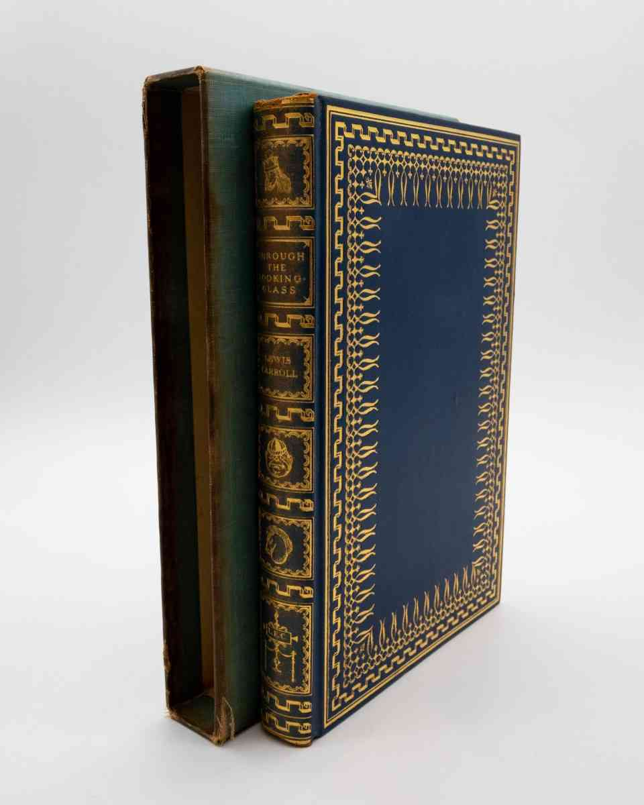
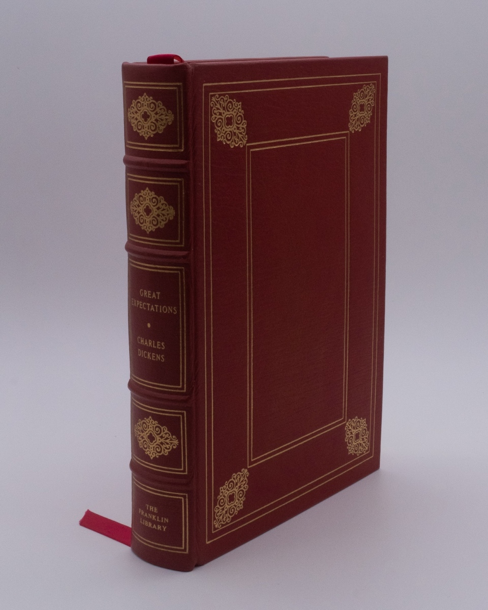
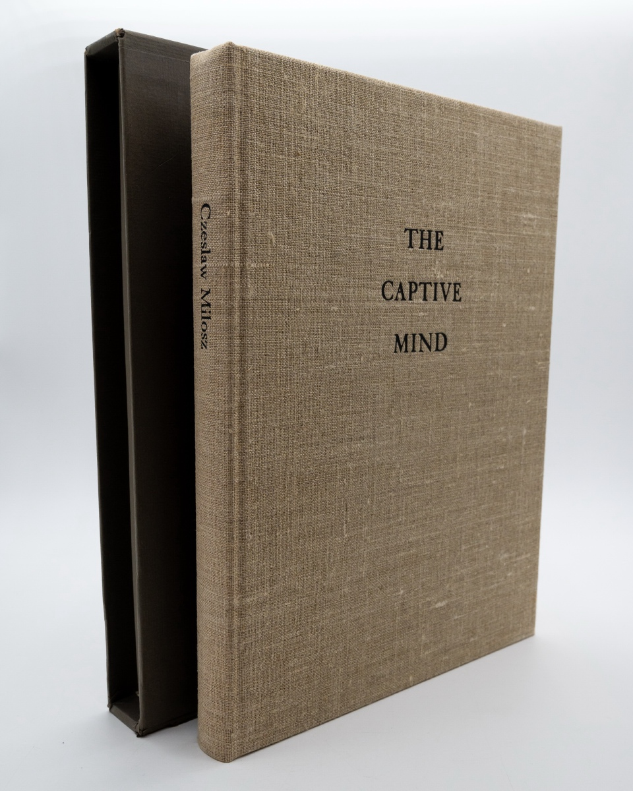
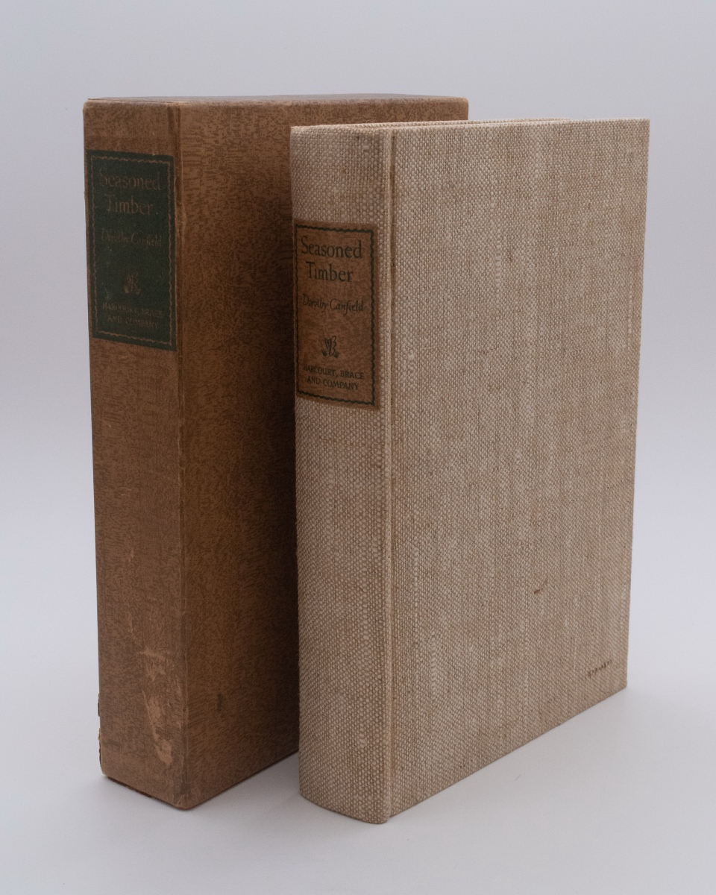
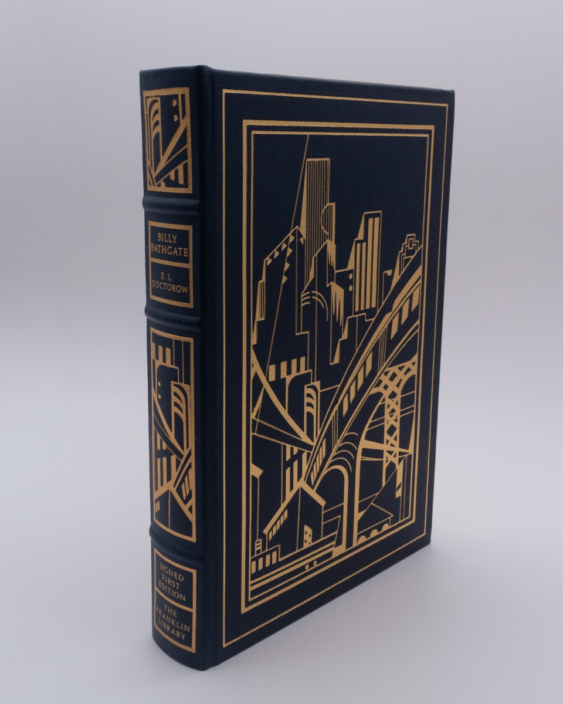
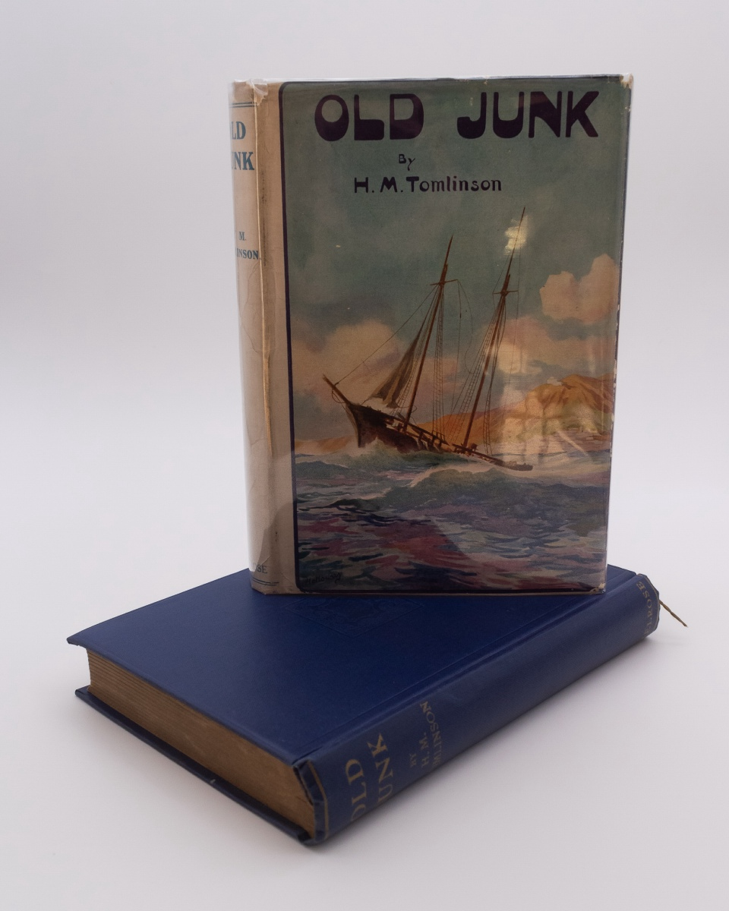
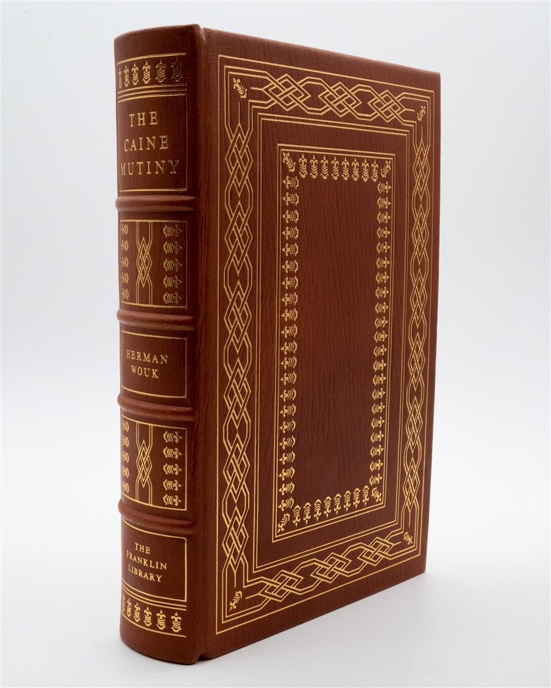

Antiquarian Books

Through the Looking-Glass and What Alice Found There
Lewis Carroll
R7,160.80
- New York: The Limited Editions Club, 1935.
- Illustrated by John Tenniel.
- Limited Edition.
- Hardcover.
- The 65th publication by LEC and this copy being #1269 of 1500.
- Introduction by Carl van Doren and with the original illustrations by John Tenniel re-engraved in metal by Frederic Warde who also designed the book.
- Printed by The Printing House of William Edwin Rudge and set in monotype Caslon.
- Printed on Hurlbut special paper and bound by George McKibbin & Son in full blue morroco, gold stamped with a floral design by Frederic Warde.
- This copy is not signed by the "original Alice", Alice Hargreaves.
- Companion volume to no 36 - Alice in Wonderland. About a VG+ book.
- Spine showing wear as is often seen with early LEC leather books.
- The boards are fine and internally book is also in fine condition.
- VG original publisher slipcase.
- ; 8vo 8" - 9" tall.
- Very Good+.

Great Expectations
Charles Dickens
R1,113.90
- Pennsylvania: Franklin Library.
- Published exclusively for the subscribers of the “World’s Best Books Series”.
- Beautifully bound in leather with gilt letter and design in 22kt gold and printed on archival paper with gilt edges.
- The end sheets are of moire silk fabric with a silk marker sewn in.
- The book is in fine condition, collectable; World's Best Books Series; 8vo 8" - 9" tall.
- Fine.

The Captive Mind
Czeslaw Milosz
R3,103.01
- New York: The Limited Editions Club, 1983.
- Illustrated by Janusz Kapusta and Czeslaw Milosz.
- Limited Edition.
- Hardcover.
- 1370 of 1500 numbered copies, signed by Czeslaw Milosz and Janusz Kapusta.
- 537th publication of LEC and the 4th of the 47th series.
- The book is in fine condition, internally clean and with loose plate laid in.
- The original slipcase with some shelfwear and a couple of spots where the paper is lifting, but with no splits or cracks, VG+.
- Translated by Jane Zielonko and preface by the author.
- Illustrated by Janusz Kapusta with pen and ink drawings and oil paintings reproduced by Seaboard Lithograph Company.
- Printed by Darrell Hyder, set in monotype Veronese on soft white Mohawk wove paper.
- Bound by Wm. F. Zahrndt in full natural polish linen stamped in black leaf.
- 190 pages, 8 ¼ x 10 7/8 inches; Small 4to 9" - 11" tall; 190 pages; Signed by Author & Illustrator.
- Fine.

Seasoned Timber
Dorothy Canfield
R1,193.47
- New York: Harcourt Brace, 1939.
- First Edition; First Printing.
- Hardcover.
- 1st printing in Slipcase.
- Cream cooloured rough linen covers in a slipcase.
- Frontispiece illustrated by Paul Honore, title page and binding designed by Richard Ellis.
- The book in about Fine condition with a small owner sticker in the front, otherwise internally clean.
- Slipcase NF with some minor scuffing.
- A Beautiful copy in very collectable condition.
- NF overall or better; 8vo 8" - 9" tall.
- Fine.

Billy Bathgate
El Doctrow
R1,432.16
- Pennsylvania: Franklin Library, 1989.
- First Edition; First Printing.
- Hardcover.
- Special signed first edition for the members of the First Edition Society.
- Publisher letter and presentation page laid in.
- Beautifully bound in leather with gilt letter and design in 22kt gold and printed on archival paper with gilt edges.
- The end sheets are of moire silk fabric with a silk marker sewn in, still in its original position.
- The book is in fine condition, with tight binding, likely unread; Signed by Author.
- Fine.

Old Junk
H. M. Tomlinson
R1,511.72
- London: Andrew Melrose, 1918.
- Hardcover.
- First Edition in original dust jacket, with the bound in silk marker still present.
- A beautiful copy of the author’s 2nd book.
- The book is near fine in a VG dust jacket.
- Dw is unclipped with some minor edgewear and chipping, in particular around the top of the spine.
- Now housed in a removal plastic covering.
- NF in VG dw. ; 8vo 8" - 9" tall.
- Near Fine in Very Good dust jacket

The Caine Mutiny
Herman Wouk
R1,193.47
- Pennsylvania: The Franklin Library, 1977.
- Illustrated by George H Jones.
- Limited Edition.
- Hardcover.
- Special signed edition, part of the 60 limited edition series published between 1977 and 1982.
- Beautifully bound in leather with gilt letter and design in 22kt gold and printed on archival paper with gilt edges.
- The end sheets are of moire silk fabric with a silk marker sewn in. Signed by the author.
- A few spots of foxing in the front and back of book and a few marks on to the top edge.
- Tight binding and clearly unread.
- Near Fine book in Collectible condition and will look great on any shelf.
- ; Large 8vo 9" - 10" tall; 544 pages.
- Near Fine.
The Wasp Factory
Iain Banks
R3,103.01
- London: MacMillan, 1984.
- First Edition; First Printing.
- Hardcover.
- Iain Banks first published novel, banks wrote several SF novel before this, none accepted for publication.
- The book sold well, but was initially met with a mixture of acclaim and criticism, due to the gruesome depiction of violence.
- A 1997 poll of over 25 000 readers of The Independent listed The Wasp Factory as one of the top 100 books of the 20th Century.
- A particularly Fine copy, approaching new in a like unclipped jacket (£7.95) , with a small dealer price sticker on the back now in a protective acetate cover.
- Binding is tight and book seems unread.
- A superb copy.
- Fine in dw; 8vo 8" - 9" tall.
- As New in Fine+ dust jacket.